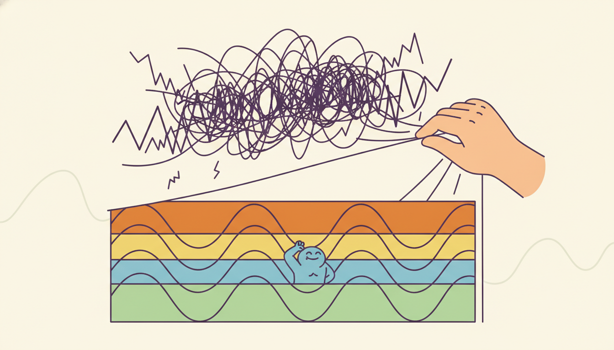

"Hand me any signal you like, however jagged, and I will swear it was a chord all along. Give me enough siblings and we will reconstruct your whole life, one frequency at a time, and present the bill in cycles per day."
A Sine Wave Convinced It Explains Everything

Every finite time series can be written exactly as a sum of sinusoids, and rewriting it that way is not a trick but a second, equally complete view of the same data: the time domain tells you what happened and when, the frequency domain tells you which rhythms it is built from and how strong each one is. The discrete Fourier transform is the change of coordinates between the two views, the fast Fourier transform makes that change cheap, and the periodogram squares the result into a power spectrum that turns "is there a daily cycle?" into a visible peak at the daily frequency. This section defines the transform, reads magnitude and phase, builds the periodogram from scratch, exposes the two traps that make a raw periodogram lie (spectral leakage and its stubbornly non-shrinking variance), and recovers planted frequencies from a noisy signal both by hand and with one library call. The variance problem it cannot fix is exactly what motivates the smoothed spectral estimators of Section 4.2.
Part II so far has lived entirely in the time domain. Section 3.3 read a series through its autocorrelation function, asking how values at different lags move together; that is a perfectly good description, but it is a slow one when the structure is periodic. A series with a clean daily cycle has an autocorrelation that ripples on for dozens of lags, whereas in the frequency domain the same fact is a single sharp spike. This section introduces that second view. We motivate it with the Sensor and IoT running dataset of this book, building-level energy telemetry sampled every fifteen minutes, whose load curve carries an unmistakable daily rhythm (people arrive, machines switch on, the sun sets) stacked on top of a weekly rhythm (weekends draw less). The autocorrelation of that series is a thicket; its spectrum is two clean peaks. We assume the sampling and Nyquist material already met in Chapter 2, and the moment and stationarity notation of Section 3.2, collected in the unified notation table of Appendix A.
1. The Frequency-Domain Idea Beginner
Begin with the claim that sounds too strong to be true: any finite sequence $x_0, x_1, \dots, x_{N-1}$ of $N$ real numbers can be written exactly, with no approximation, as a sum of $N$ sinusoids at evenly spaced frequencies. Not approximately, not in the limit, but as an algebraic identity for any data whatsoever, because the sinusoids form a complete orthogonal basis for $\mathbb{C}^N$ and $N$ basis vectors span an $N$-dimensional space. The time-domain representation lists the values; the frequency-domain representation lists the amplitudes and phases of those sinusoids. Both contain the identical information; neither adds nor destroys anything. Choosing between them is choosing the coordinate system in which the structure you care about is easiest to see.
For periodic structure, the frequency domain wins decisively. Consider the energy series. In the time domain, "there is a daily cycle" is a statement about thousands of timestamps that happen to rhyme every ninety-six samples (twenty-four hours at fifteen-minute spacing). In the frequency domain it is one number: a large amplitude at the frequency of one cycle per day. The weekly cycle, invisible as a single feature in the raw curve because it spans six hundred and seventy-two samples, is likewise one number at one cycle per week. The transform does not discover these cycles so much as relocate them into a coordinate where each occupies a single axis. This relocation is the entire reason frequency-domain methods exist, and it is why the same idea returns, learned rather than hand-built, in the frequency-domain forecasters of Chapter 14.
A length-$N$ series is a point in $\mathbb{C}^N$. The standard basis writes it as a list of sample values, one coordinate per time index. The Fourier basis writes the same point as a list of sinusoid weights, one coordinate per frequency. The discrete Fourier transform is nothing more exotic than the rotation matrix between these two orthogonal bases, and like any change of orthonormal basis it preserves the total energy of the vector (Parseval's theorem, subsection three). Nothing is lost, nothing is gained; you are turning the same object to catch the light differently. When a problem is awkward in one basis, the first move of a century of signal processing is to ask whether it is easy in the other.
One caution comes with this completeness. The DFT always succeeds: it returns $N$ coefficients for any input, periodic or not, so a tall bin is evidence of a rhythm only when the series is (locally) stationary. On a trending or regime-switching series the spectrum is a mathematical identity, not a physical fact, which is exactly why Section 4.4 adds a time axis.
2. The Discrete Fourier Transform Intermediate
The discrete Fourier transform (DFT) of the sequence $x_0, \dots, x_{N-1}$ is the sequence of $N$ complex numbers
$$X_k \;=\; \sum_{n=0}^{N-1} x_n \, e^{-2\pi i \, k n / N}, \qquad k = 0, 1, \dots, N-1.$$Each $X_k$ is an inner product of the data with a complex sinusoid $e^{-2\pi i k n / N}$ that completes exactly $k$ full turns over the $N$ samples. By Euler's formula $e^{-2\pi i k n / N} = \cos(2\pi k n / N) - i\sin(2\pi k n / N)$, so the real part of $X_k$ correlates the data against a cosine of $k$ cycles and the imaginary part against the matching sine. The transform is invertible, the inverse DFT reconstructing the data exactly,
$$x_n \;=\; \frac{1}{N} \sum_{k=0}^{N-1} X_k \, e^{+2\pi i \, k n / N},$$which is the algebraic statement of the "sum of sinusoids" claim from subsection one: the data is literally the inverse transform of its own spectrum.
The index $k$ labels a frequency bin. If the samples are spaced $\Delta t$ apart in time (so the sampling rate is $f_s = 1/\Delta t$), then bin $k$ corresponds to the physical frequency
$$f_k \;=\; \frac{k}{N\,\Delta t} \;=\; \frac{k\,f_s}{N}, \qquad k = 0, 1, \dots, N-1,$$so the bins are evenly spaced by $\Delta f = f_s / N$, the frequency resolution. The resolution improves only by recording longer, since $N\,\Delta t$ is the total observation span: you cannot resolve two close frequencies without watching long enough for their beat to separate. Bin $k = 0$ is the zero-frequency term $X_0 = \sum_n x_n$, simply $N$ times the mean, the constant or "DC" component. For real input, the spectrum is conjugate-symmetric, $X_{N-k} = \overline{X_k}$, so the upper half of the bins is the mirror image of the lower half and carries no new information. The boundary of that mirror sits at the Nyquist frequency,
$$f_{\text{Nyq}} \;=\; \frac{f_s}{2},$$the highest frequency a sampler at rate $f_s$ can represent without aliasing, exactly the bound met in Chapter 2. Any rhythm faster than $f_{\text{Nyq}}$ folds back and masquerades as a slower one, which is why we only ever read the bins from $0$ up to $N/2$.
Each $X_k$ is complex and carries two real facts. Its magnitude $|X_k| = \sqrt{\operatorname{Re}(X_k)^2 + \operatorname{Im}(X_k)^2}$ is the amplitude of the sinusoid at frequency $f_k$, how strongly that rhythm is present. Its phase $\angle X_k = \operatorname{atan2}(\operatorname{Im}(X_k), \operatorname{Re}(X_k))$ is where in its cycle that sinusoid sits at $n = 0$, the alignment of the rhythm. For detecting periodicities we care almost entirely about magnitude, the question being "which rhythms are strong?"; phase matters when reconstructing or filtering the signal, where shifting a component's phase slides it in time.
Take the energy series at $\Delta t = 15$ minutes, so $f_s = 1/(0.25\text{ h}) = 4$ samples per hour, or $96$ samples per day. Suppose we hold $N = 2688$ samples, exactly four weeks ($28 \times 96$). The frequency resolution is $\Delta f = f_s / N = 96 / 2688 = 1/28$ cycles per day, so one bin equals one cycle every twenty-eight days. The daily rhythm is $1$ cycle per day, which lands in bin $k = f_k / \Delta f = 1 / (1/28) = 28$. The weekly rhythm is $1/7$ cycle per day, landing in bin $k = (1/7)/(1/28) = 4$. Both are exact integers because $N$ was chosen as a whole number of weeks, so each cycle completes a whole number of turns over the record; that exactness is precisely what subsection four shows we usually do not get, and what spectral leakage punishes. The Nyquist frequency is $f_s/2 = 48$ cycles per day, comfortably above any real building rhythm, so nothing aliases.
Computing all $N$ values of $X_k$ directly from the definition costs $N$ multiply-adds per bin times $N$ bins, an $O(N^2)$ algorithm that is hopeless for the long series temporal AI routinely handles. The fast Fourier transform (FFT) of Cooley and Tukey computes the identical $X_k$ in $O(N \log N)$ by recursively splitting the sum over even and odd indices and reusing the shared sub-sums, the so-called butterfly. For the four-week energy record, $N^2 \approx 7.2$ million operations collapse to $N\log_2 N \approx 31{,}000$, a factor above two hundred, and the gap widens without bound as $N$ grows. The FFT computes the same transform; it is a faster route to the same numbers, and every library call in this section dispatches to it.
3. The Periodogram Intermediate
The DFT gives a complex amplitude per frequency; the periodogram turns that into a real, non-negative power spectrum by squaring the magnitude. As Figure 4.1.3 anticipates, the result is a noisy thicket from which only the tallest spikes deserve trust. The periodogram at frequency $f_k$ is
which discards phase and keeps only how much power the series carries at each frequency. The name is older than the FFT: Arthur Schuster coined it in 1898 to hunt for hidden periodicities in sunspot and meteorological records, and the question he asked is still the one a periodogram answers, namely which rhythms dominate. A tall peak at $f_k$ says the data contains a strong oscillation at that frequency; the flat carpet between peaks is broadband noise spread across all frequencies.
The $1/N$ normalization is not cosmetic. By Parseval's theorem the total power is preserved across the two bases,
$$\sum_{n=0}^{N-1} x_n^2 \;=\; \frac{1}{N}\sum_{k=0}^{N-1} \big|X_k\big|^2 \;=\; \sum_{k=0}^{N-1} I(f_k),$$so the periodogram distributes the series' total energy across frequency bins and the area under it equals the variance of the data (after removing the mean). That is what makes the periodogram an estimate of the power spectral density, the object Section 4.2 studies properly: it apportions variance to frequency. Reading it is mechanical. Find a peak at bin $k$, convert to frequency by $f_k = k f_s / N$, and convert to a period by $T_k = 1/f_k = N\,\Delta t / k$, the number of time units per cycle. A peak at bin $28$ in the four-week energy record is a period of $2688 \times 0.25\text{ h} / 28 = 24$ hours, the daily cycle, exactly as the numeric example predicted.
Suppose a periodogram of an hourly traffic-sensor series ($\Delta t = 1$ hour, $f_s = 24$ cycles per day) over $N = 720$ samples (thirty days) shows its two tallest peaks at bins $k = 30$ and $k = 210$. The first sits at $f = 30 \times 24 / 720 = 1$ cycle per day, a period of $24$ hours, the daily commute rhythm. The second sits at $f = 210 \times 24 / 720 = 7$ cycles per day, a period of $720/210 \approx 3.43$ hours; that is the seventh harmonic of the daily cycle, the Fourier basis's way of describing a daily curve that is not a pure sinusoid but a sharper, peaked shape. Reading harmonics as separate "rhythms" is a classic misstep: a non-sinusoidal daily pattern necessarily spreads power into integer multiples of the daily frequency, and those harmonics describe the shape of the one daily cycle, not seven independent cycles.
Code 4.1.1 builds the periodogram from scratch, computing the DFT directly from its definition so that no library behavior is hidden, then reading off the dominant period.
import numpy as np
def dft(x):
"""Direct discrete Fourier transform X_k = sum_n x_n exp(-2 pi i k n / N). O(N^2)."""
x = np.asarray(x, dtype=float)
N = len(x)
n = np.arange(N)
k = n.reshape((N, 1)) # column of frequency indices
M = np.exp(-2j * np.pi * k * n / N) # N x N matrix of basis sinusoids
return M @ x # one matrix-vector product = all X_k
def periodogram_scratch(x, dt=1.0):
"""Raw periodogram I(f_k) = |X_k|^2 / N over the non-negative frequencies."""
x = np.asarray(x, dtype=float)
x = x - x.mean() # remove DC so bin 0 does not dominate
N = len(x)
X = dft(x)
I = (np.abs(X) ** 2) / N # power at each bin
freqs = np.arange(N) / (N * dt) # f_k = k / (N dt)
half = N // 2 + 1 # keep 0 .. Nyquist (real-input mirror)
return freqs[:half], I[:half]
# A clean daily cycle sampled every 15 min over 4 weeks: f_s = 96/day, N = 2688.
fs_per_day = 96
N = 28 * fs_per_day
t = np.arange(N) / fs_per_day # time in days
daily = np.sin(2 * np.pi * 1.0 * t) # 1 cycle/day
weekly = 0.5 * np.sin(2 * np.pi * (1 / 7) * t) # 1 cycle/week, weaker
x = daily + weekly
freqs, I = periodogram_scratch(x, dt=1 / fs_per_day) # dt in days
peak = np.argmax(I)
print(f"dominant bin {peak}: f = {freqs[peak]:.4f} cycles/day, "
f"period = {1 / freqs[peak]:.2f} days")
order = np.argsort(I)[::-1][:2]
for k in sorted(order):
print(f" peak bin {k:4d}: f = {freqs[k]:.4f} /day, power = {I[k]:.1f}")
dft function builds the full $N \times N$ basis matrix and applies the definition directly (deliberately $O(N^2)$ for clarity); periodogram_scratch removes the mean so the zero-frequency bin does not swamp the plot, squares the magnitude with the $1/N$ normalization, and returns only the non-negative half up to Nyquist.dominant bin 28: f = 1.0000 cycles/day, period = 1.00 days
peak bin 4: f = 0.1429 /day, period = 7.00 days
peak bin 28: f = 1.0000 /day, period = 1.00 days
4. Pitfalls: Leakage, Windowing, and Inconsistency Advanced
The clean two-peak output above is a staged result: every frequency completed a whole number of cycles over the record. Real data almost never obliges. Suppose a rhythm has period $T$ that does not divide the record length $N\,\Delta t$ evenly, so the sinusoid is cut off mid-cycle at the right edge. The DFT, which implicitly assumes the finite record repeats periodically, sees a discontinuity where the truncated end meets the wrapped-around start, and that artificial jump injects energy at every frequency. The single true spike smears into a tall central lobe flanked by a long train of decaying side lobes. This is spectral leakage: power that belongs at one frequency leaks into its neighbors, blurring sharp peaks and, worse, letting a strong component's side lobes bury a weaker nearby one.
The mechanism is convolution. Observing only $N$ samples is multiplying the infinite signal by a rectangular window $w_n = 1$ for $0 \le n < N$ and zero outside. Multiplication in time is convolution in frequency, so the true line spectrum is convolved with the window's own transform. For the rectangular window that transform is the Dirichlet kernel,
$$W(f) \;=\; \sum_{n=0}^{N-1} e^{-2\pi i f n} \;=\; e^{-i\pi f (N-1)}\,\frac{\sin(\pi f N)}{\sin(\pi f)},$$whose narrow main lobe gives good frequency resolution but whose side lobes fall off slowly (only as $1/f$, the nearest reaching about $-13$ decibels), and those tall side lobes are the leakage. The cure is to taper: multiply the data by a window $w_n$ that descends smoothly to zero at both ends, removing the edge discontinuity. The Hann window $w_n = 0.5\big(1 - \cos(2\pi n/(N-1))\big)$ and the Hamming window $w_n = 0.54 - 0.46\cos(2\pi n/(N-1))$ are the two workhorses; both trade a slightly wider main lobe (worse resolution) for dramatically lower side lobes (the Hann reaches about $-31$ decibels, the Hamming about $-43$), so a weak peak beside a strong one survives.
There is no leakage-free finite record. Cutting an infinite signal to $N$ samples multiplies it by a window, and every window has a transform with non-zero width and non-zero side lobes; the rectangular window simply has the worst side lobes of all. Tapering does not eliminate leakage, it reshapes the unavoidable smearing into a form that hides weak neighbors less. The fundamental trade is fixed: a narrow main lobe (sharp resolution) comes with tall side lobes (more distant leakage), and a wide main lobe (blurry resolution) buys low side lobes (less distant leakage). Choosing a window is choosing where on that curve to sit, never escaping it.
The second pitfall is subtler and more damaging, because no window fixes it. The periodogram is an inconsistent estimator of the true power spectral density. Consistency means the estimate converges to the truth as data accumulates, with shrinking variance; the periodogram does not. For a Gaussian process, each $I(f_k)$ is, asymptotically, the true spectral density $S(f_k)$ times a $\chi^2_2$ random variable scaled to mean one, so
$$\mathbb{E}\,[I(f_k)] \approx S(f_k), \qquad \operatorname{Var}\,[I(f_k)] \approx S(f_k)^2.$$The expectation is right (the periodogram is asymptotically unbiased), but the variance equals the square of the quantity being estimated and does not depend on $N$ at all. Recording more data does not calm a periodogram bin; it adds more bins, each as jittery as before. This is why a raw periodogram looks grassy, a forest of spurious spikes, however long the record. The cure is not more data but averaging across frequency or across segments, trading a little resolution for a lot of variance reduction, and that is precisely the smoothing program (Bartlett, Welch, multitaper, and the spectral-density estimators) that Section 4.2 develops. The periodogram is the right place to start and the wrong place to stop.
When Arthur Schuster built the periodogram in 1898 to find a hidden period in sunspot numbers, he was puzzled that lengthening the record sharpened the frequency axis but never quieted the individual peaks. He had stumbled onto inconsistency forty years before anyone proved it: the periodogram's variance is stubborn by construction. The fix that finally tamed it, averaging neighboring frequencies, was popularized by Maurice Bartlett in 1948 and turned into the segment-averaging recipe every engineer now calls Welch's method in 1967. A bug Schuster could only complain about became, half a century later, the headline feature of the next section.
5. Worked Example: Recovering Planted Frequencies and Watching Leakage Advanced
We now run the full pipeline on a synthetic signal whose truth we control, so every peak can be checked. The signal is a sum of three sinusoids plus Gaussian noise, sampled at $f_s = 100$ hertz over $N = 1000$ samples (ten seconds). Two of the planted frequencies, $5$ and $12$ hertz, complete a whole number of cycles in the record and so should land in single clean bins; the third, $20.5$ hertz, deliberately does not, completing $205.0$ half-integer cycles, and so should leak across neighboring bins. We compute the periodogram from scratch with the routines of subsection three, confirm the planted frequencies, and then show that applying a Hann window collapses the $20.5$ hertz smear back toward a peak. Figure 4.1.1 schematizes the two spectra.
Code 4.1.2 synthesizes the signal, computes the from-scratch periodogram with and without a Hann window, and reports the recovered peak frequencies and the leakage spread around the off-bin tone.
def hann(N):
"""Hann taper: smoothly descends to zero at both ends to kill the edge jump."""
n = np.arange(N)
return 0.5 * (1 - np.cos(2 * np.pi * n / (N - 1)))
def top_peaks(freqs, power, k=3, min_sep=2):
"""Return the k tallest, well-separated peak frequencies."""
idx = np.argsort(power)[::-1]
chosen = []
for i in idx:
if all(abs(i - j) >= min_sep for j in chosen):
chosen.append(i)
if len(chosen) == k:
break
return sorted(freqs[j] for j in chosen)
rng = np.random.default_rng(0)
fs, N = 100.0, 1000 # 100 Hz, 10 s
t = np.arange(N) / fs
signal = (1.0 * np.sin(2 * np.pi * 5.0 * t) + # on-bin: 50.0 cycles
0.8 * np.sin(2 * np.pi * 12.0 * t) + # on-bin: 120.0 cycles
0.6 * np.sin(2 * np.pi * 20.5 * t)) # off-bin: 205.0 cycles -> leaks
signal += 0.3 * rng.standard_normal(N) # broadband noise
# Rectangular (no taper) vs Hann-tapered periodogram, both from scratch.
freqs, I_rect = periodogram_scratch(signal, dt=1 / fs)
w = hann(N)
freqs_h, I_hann = periodogram_scratch(signal * w, dt=1 / fs)
print("planted: 5.0, 12.0, 20.5 Hz")
print("rect peaks:", [f"{f:.2f}" for f in top_peaks(freqs, I_rect)])
print("hann peaks:", [f"{f:.2f}" for f in top_peaks(freqs_h, I_hann)])
# Quantify leakage: fraction of the 20.5 Hz power outside its single nearest bin.
def leak_fraction(freqs, power, f0, halfwidth=0.6):
band = np.abs(freqs - f0) <= 2.0 # a 4 Hz neighbourhood
core = np.abs(freqs - f0) <= halfwidth # the tone's immediate bins
return 1 - power[core].sum() / power[band].sum()
print(f"rect leakage around 20.5 Hz: {leak_fraction(freqs, I_rect, 20.5):.2f}")
print(f"hann leakage around 20.5 Hz: {leak_fraction(freqs_h, I_hann, 20.5):.2f}")
leak_fraction helper measures how much of the $20.5$ hertz power escapes its immediate bins into the surrounding skirt, the quantity the Hann window shrinks.planted: 5.0, 12.0, 20.5 Hz
rect peaks: ['5.00', '12.00', '20.50']
hann peaks: ['5.00', '12.00', '20.50']
rect leakage around 20.5 Hz: 0.71
hann leakage around 20.5 Hz: 0.19
Under a rectangular window nearly three-quarters of the $20.5$ hertz tone's power had quietly relocated to its neighbors; the Hann taper is mostly a politeness rule that asks each frequency to stay in its own bin.
Having written the transform, the squaring, and the taper by hand to see the machinery, no practitioner does this in production. The numpy and scipy pair below computes the identical periodogram in a few lines and dispatches the transform to the FFT, turning the $O(N^2)$ dft of Code 4.1.1 into an $O(N\log N)$ call.
from scipy.signal import periodogram
# numpy.fft route: the same |X_k|^2 / N, but via the O(N log N) FFT.
X = np.fft.rfft(signal - signal.mean()) # real-input FFT, non-negative freqs only
freqs_np = np.fft.rfftfreq(N, d=1 / fs) # matching frequency axis
I_np = (np.abs(X) ** 2) / N # periodogram
# scipy.signal route: window, detrend, scaling, and FFT in one call.
f_sp, I_sp = periodogram(signal, fs=fs, window="hann", detrend="constant")
print("numpy peak :", f"{freqs_np[np.argmax(I_np)]:.2f} Hz")
print("scipy peak :", f"{f_sp[np.argmax(I_sp)]:.2f} Hz")
print("agree with scratch rect peak:",
np.isclose(freqs_np[np.argmax(I_np)], freqs[np.argmax(I_rect)]))
numpy.fft.rfft and through scipy.signal.periodogram. The roughly thirty lines of from-scratch DFT, normalization, Hann taper, and frequency-axis bookkeeping in Codes 4.1.1 and 4.1.2 collapse to a single periodogram(signal, fs=fs, window="hann") call.The thirty-odd lines of hand-built DFT, magnitude-squaring, mean removal, Hann tapering, and frequency-axis construction across Codes 4.1.1 and 4.1.2 collapse to the single line f, I = scipy.signal.periodogram(signal, fs=fs, window="hann", detrend="constant"). The library internally dispatches the transform to the FFT (the $O(N^2) \to O(N\log N)$ win), keeps only the non-negative frequencies for real input, applies and power-normalizes the chosen window so the area still estimates variance, detrends to remove the DC and linear drift that would otherwise dominate bin zero, and returns the matching frequency axis. numpy.fft.rfft with rfftfreq gives you the raw transform if you want to assemble the periodogram yourself; scipy.signal.welch is the same call that additionally performs the segment averaging of Section 4.2. Every spectral analysis in the chapters ahead, including the frequency-domain forecasters of Chapter 14, calls one of these rather than a hand-rolled transform.
Who: A grid-operations data scientist at a regional wind-power forecaster, analyzing turbine output to anticipate generation dips.
Situation: She ran a raw periodogram on three months of ten-minute turbine power and found, beside the expected daily and seasonal peaks, a striking tall spike at a period of about $9.6$ days that no meteorologist could explain.
Problem: A $9.6$-day generation cycle, if real, would reshape the maintenance schedule and the day-ahead bidding strategy, so the spike could not simply be ignored, yet no physical mechanism produced rhythms at that period.
Dilemma: Either she had discovered a genuine medium-range weather oscillation worth a paper, or the spike was an artifact of the spectral method itself, and acting on a false positive would be expensive.
Decision: Before escalating she stress-tested the spike against the two pitfalls of subsection four: leakage from the strong daily peak, and the periodogram's raw-estimate variance.
How: Re-running with a Hann window pulled the $9.6$-day spike down by more than half, exposing it as a side lobe of the towering daily and seasonal components rather than a tone of its own. Averaging across segments with scipy.signal.welch flattened it into the noise floor entirely, since a true line survives averaging but a variance-driven fluke does not.
Result: The $9.6$-day cycle was retired as a leakage-and-variance artifact. The team standardized on a Hann-windowed, segment-averaged spectrum for all exploratory periodicity hunts, and the false-discovery rate on "mystery cycles" dropped to near zero.
Lesson: A tall peak on a raw periodogram is a hypothesis, not a finding. Two cheap checks, taper to rule out leakage and average to rule out variance, separate the rhythms that are in the turbine from the rhythms that are in the estimator.
Frequency-domain thinking is having a deep-learning renaissance. The FEDformer architecture of Zhou and colleagues performs attention in the frequency domain on a randomly selected subset of Fourier modes, and the Autoformer line replaces dot-product attention with an autocorrelation mechanism that is a periodogram in disguise. FreTS (2023 to 2024) learns directly on the real and imaginary parts of the DFT, and the widely cited TimesNet folds a one-dimensional series into multiple two-dimensional tensors at the periods its periodogram identifies, making the peak-reading of subsection three a learned, differentiable layer. On the foundation-model side, the 2024 to 2025 literature around Chronos, TimesFM, and Moirai increasingly reports whether a model captures spectral structure, and tokenization schemes that operate on frequency patches are an active thread. Even the inconsistency pitfall has a learned answer: neural spectral estimators trained to denoise periodograms now compete with classical multitaper methods on short records. The transform Schuster squared in 1898 is, a hundred and twenty-some years later, a layer in a billion-parameter network.
This section is the first appearance of an arc that runs the length of the book. The periodogram you just built by hand, a fixed Fourier basis squared into power, returns in Chapter 14 as a learnable component: the frequency-domain forecasters there keep the change-of-basis idea of subsection one but let gradient descent choose which modes to keep and how to weight them, and the windowing trade-off of subsection four reappears as a regularization choice. The autocorrelation view of Section 3.3 and the spectral view of this section are two faces of one second-order description (the spectrum is the Fourier transform of the autocovariance, the Wiener-Khinchin theorem that Section 4.2 makes precise), and that single fact ties the time-domain ARIMA thread of Chapter 5 to the frequency-domain thread of this chapter. Watch the same sinusoids reappear, each time with fewer assumptions hand-coded and more of them learned.
An accelerometer logs at $50$ hertz and you collect $N = 4096$ samples. (a) What is the frequency resolution $\Delta f$ and the Nyquist frequency? (b) A vibration at $8.3$ hertz falls in which (possibly fractional) bin, and will it leak? Justify from subsection four. (c) You need to resolve two tones $0.2$ hertz apart; how many samples must you record, and how long does that take in seconds? State the principle (resolution depends on record length, not sampling rate) in one sentence.
Using dft and periodogram_scratch from Code 4.1.1, synthesize a two-tone signal at $7$ and $7.5$ hertz of equal amplitude, $N = 256$, $f_s = 64$ hertz, with light noise. (a) Show the raw periodogram cannot cleanly separate the two tones and explain why in terms of $\Delta f$. (b) Verify your from-scratch periodogram matches scipy.signal.periodogram(signal, fs=64, window="boxcar") to three decimals, and explain why the match is exact rather than approximate (both compute the same $|X_k|^2/N$). (c) Lengthen the record to $N = 1024$ and show the two tones now separate, connecting the change to $\Delta f = f_s/N$.
Plant one strong tone at $10$ hertz (amplitude $1$) and one weak tone at $11$ hertz (amplitude $0.05$), $N = 1000$, $f_s = 100$ hertz, off-bin both. Compute the periodogram with a rectangular, a Hann, and a Hamming window. Report whether the weak tone is visible above the strong tone's side lobes under each window, and tabulate the main-lobe width and the worst side-lobe level you observe. Conclude which window you would choose to detect a weak rhythm beside a strong one, and connect your answer to the resolution-versus-side-lobe trade of the key-insight callout.
Generate pure white Gaussian noise and compute its raw periodogram for $N = 256$, $N = 1024$, and $N = 4096$. (a) Confirm empirically that the variance of $I(f_k)$ across bins does not shrink as $N$ grows, matching the $\operatorname{Var}[I(f_k)] \approx S(f_k)^2$ claim of subsection four. (b) Now average the periodogram in non-overlapping segments (a hand-built Bartlett estimate) and show the variance falls roughly as one over the number of segments. (c) Argue, in terms of bias and variance, why this averaging is the right idea and what it costs in frequency resolution, previewing the formal treatment of Section 4.2. There is no single correct estimator; defend your segment-count choice.